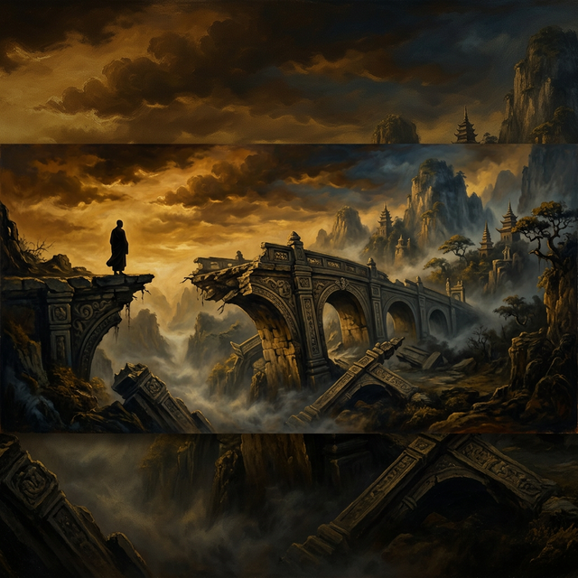
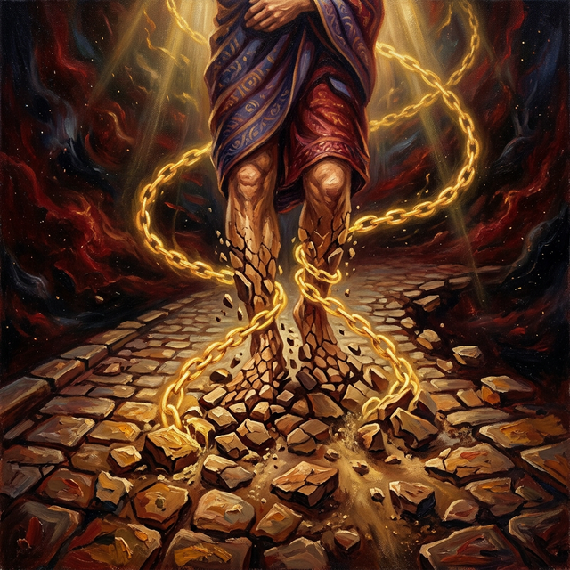
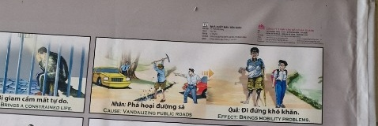

La Senda DestruidaThe Destroyed PathIl Sentiero Distrutto被毁的道路الطريق المدمرРазрушенный путьDer Zerstörte PfadLe Sentier Détruit破壊された道A Senda DestruídaCon Đường Bị Phá Hủy
Quien destruye el camino ajeno siembra parálisis en su propio andar. He who destroys another's path sows paralysis in his own stride. Kẻ phá hủy con đường của người khác gieo rắc sự tê liệt trong bước đi của chính mình. Wer den Weg anderer zerstört, sät Lähmung in seinen eigenen Schritt. Кто разрушает чужой путь, сеет паралич в собственной поступи. Celui qui détruit le chemin d'autrui sème la paralysie dans sa propre marche. Chi distrugge il cammino altrui semina paralisi nel proprio passo. Quem destrói o caminho alheio semeia paralisia em seu próprio andar. 他人の道を壊す者は、自らの歩みに麻痺を播く。 谁毁了别人的路，就在自己的步伐中埋下了瘫痪的种子。 من يدمر طريق غيره يزرع الشلل في مسيرته.
Las vías que surcan la superficie de la tierra son las arterias sagradas que conectan la vida de los hombres entre sí. Quien deliberadamente destruye un camino, arranca las piedras de un puente o vandaliza con desprecio la infraestructura forjada por el sudor colectivo, está cortando las venas sutiles por las cuales fluye la cooperación humana y el progreso compartido...
Cada acera destrozada, cada señal arrancada, cada obra de todos profanada con saña egoísta deja una marca indeleble en el registro cósmico del alma. La energía invertida en la destrucción de lo que une a las personas retorna siempre como inmovilidad, como cadenas invisibles que amarran los pasos del destructor.
Porque la ley universal dicta con precisión impecable que aquel que obstruye o destroza los caminos del prójimo nacerá atrapado en un cuerpo que desconoce la libertad de movimiento, condenado a experimentar en su propia carne la agonía de no poder avanzar por aquella senda que antes arruinó para todos.
The roads that cross the surface of the earth are the sacred arteries connecting the lives of men to one another. Whoever deliberately destroys a path, tears out the stones of a bridge, or vandalizes with contempt the infrastructure forged by collective sweat, is cutting the subtle veins through which human cooperation and shared progress flow...
Every sidewalk shattered, every sign torn down, every public work profaned with selfish rage leaves an indelible mark on the cosmic record of the soul. The energy invested in destroying what unites people always returns as immobility, as invisible chains that bind the steps of the destroyer.
For universal law dictates with impeccable precision that whoever obstructs or destroys the paths of others will be born trapped in a body that knows not the freedom of movement, condemned to experience in their own flesh the agony of being unable to advance along the very path they once ruined for all.
Le strade che attraversano la superficie della terra sono le arterie sacre che collegano le vite degli uomini tra loro. Chi deliberatamente distrugge un sentiero, strappa le pietre di un ponte o vandalizza con disprezzo le infrastrutture forgiate dal sudore collettivo, sta recidendo le vene sottili attraverso cui fluiscono la cooperazione umana e il progresso condiviso...
Ogni marciapiede distrutto, ogni segnale abbattuto, ogni opera pubblica profanata con furia egoistica lascia un segno indelebile nel registro cosmico dell'anima. L'energia investita nella distruzione di ciò che unisce le persone ritorna sempre come immobilità, come catene invisibili che legano i passi del distruttore.
Perché la legge universale detta con impeccabile precisione che chiunque ostruisca o distrugga i cammini altrui nascerà intrappolato in un corpo che ignora la libertà di movimento, condannato a sperimentare nella propria carne l'agonia di non poter avanzare lungo quel sentiero che un tempo rovinò per tutti.
大地上纵横交错的道路是连接人与人生命的神圣动脉。谁蓄意破坏一条道路、拆毁桥梁的石块、或肆意破坏由集体汗水铸就的基础设施，就是在切断人类合作与共同进步赖以流通的微妙血脉……
每一块被砸碎的人行道，每一个被拔除的路标，每一处被自私暴行亵渎的公共设施，都会在灵魂的宇宙记录上留下不可磨灭的印记。投入破坏之中的能量总会以瘫痪的形式回归，化为束缚破坏者脚步的无形锁链。
因为宇宙法则以无懈可击的精确度规定：凡阻碍或摧毁他人道路者，来世必将被困于一个不知行动自由的躯体中，注定亲身体验那无法前行的痛苦——正是他曾为所有人毁掉的那条路。
إن الطرق التي تعبر سطح الأرض هي الشرايين المقدسة التي تربط حياة البشر ببعضهم البعض. من يدمر عمداً طريقاً أو ينتزع حجارة جسر أو يخرب باحتقار البنية التحتية التي صُنعت بعرق الجماعة، فإنه يقطع الأوردة الدقيقة التي يتدفق من خلالها التعاون الإنساني والتقدم المشترك...
كل رصيف يُحطم، وكل إشارة تُقتلع، وكل عمل عام يُدنس بغضب أناني يترك علامة لا تُمحى في السجل الكوني للروح. الطاقة المستثمرة في تدمير ما يوحد الناس تعود دائماً كشلل، كسلاسل خفية تقيد خطوات المدمر.
لأن القانون الكوني يقضي بدقة لا تشوبها شائبة أن من يعيق أو يدمر طرق الآخرين سيولد محبوساً في جسد لا يعرف حرية الحركة، محكوماً عليه بأن يختبر في جسده عذاب عدم القدرة على السير في ذلك الطريق الذي دمره يوماً للجميع.
Дороги, пересекающие поверхность земли, — это священные артерии, соединяющие жизни людей друг с другом. Тот, кто умышленно разрушает путь, вырывает камни моста или с презрением уничтожает инфраструктуру, созданную коллективным трудом, перерезает тонкие вены, по которым течёт человеческое сотрудничество и общий прогресс...
Каждый разбитый тротуар, каждый сорванный знак, каждое общественное сооружение, осквернённое эгоистичной яростью, оставляет неизгладимый след в космическом реестре души. Энергия, вложенная в разрушение того, что объединяет людей, всегда возвращается неподвижностью, невидимыми цепями, сковывающими шаги разрушителя.
Ибо вселенский закон предписывает с безупречной точностью: кто препятствует или разрушает пути других, родится заточённым в теле, не знающем свободы движения, обречённым испытать на собственной плоти агонию невозможности идти по той самой дороге, которую когда-то разрушил для всех.
Die Straßen, die die Oberfläche der Erde durchziehen, sind die heiligen Arterien, die das Leben der Menschen miteinander verbinden. Wer vorsätzlich einen Weg zerstört, die Steine einer Brücke herausreißt oder mit Verachtung die durch kollektiven Schweiß geschaffene Infrastruktur verwüstet, durchtrennt die feinen Adern, durch die menschliche Zusammenarbeit und gemeinsamer Fortschritt fließen...
Jeder zertrümmerte Bürgersteig, jedes herausgerissene Schild, jedes mit egoistischer Wut geschändete öffentliche Werk hinterlässt ein unauslöschliches Zeichen im kosmischen Register der Seele. Die in die Zerstörung dessen, was Menschen verbindet, investierte Energie kehrt stets als Unbeweglichkeit zurück, als unsichtbare Ketten, die die Schritte des Zerstörers fesseln.
Denn das universelle Gesetz verfügt mit makelloser Präzision, dass wer die Wege anderer versperrt oder zerstört, gefangen in einem Körper geboren wird, der die Freiheit der Bewegung nicht kennt, verdammt, am eigenen Leib die Qual zu erfahren, nicht vorankommen zu können auf jenem Pfad, den er einst für alle ruinierte.
Les routes qui traversent la surface de la terre sont les artères sacrées reliant les vies des hommes les unes aux autres. Quiconque détruit délibérément un chemin, arrache les pierres d'un pont ou vandalise avec mépris les infrastructures forgées par la sueur collective, coupe les veines subtiles par lesquelles coulent la coopération humaine et le progrès partagé...
Chaque trottoir brisé, chaque panneau arraché, chaque ouvrage public profané avec une rage égoïste laisse une marque indélébile dans le registre cosmique de l'âme. L'énergie investie dans la destruction de ce qui unit les gens revient toujours sous forme d'immobilité, de chaînes invisibles qui entravent les pas du destructeur.
Car la loi universelle dicte avec une précision impeccable que quiconque obstrue ou détruit les chemins d'autrui naîtra prisonnier d'un corps ignorant la liberté de mouvement, condamné à éprouver dans sa propre chair l'agonie de ne pouvoir avancer sur ce sentier qu'il a jadis ruiné pour tous.
大地の表面を横切る道は、人々の命をつなぐ神聖な動脈です。意図的に道を破壊し、橋の石を引き抜き、集団の汗によって築かれたインフラを軽蔑をもって荒らす者は、人間の協力と共有された進歩が流れる繊細な血管を切断しているのです...
砕かれた歩道の一つ一つ、引き抜かれた標識の一つ一つ、利己的な怒りで冒涜された公共事業の一つ一つが、魂の宇宙的記録に消えない印を残します。人々を結びつけるものを破壊するために注がれたエネルギーは、常に不動として戻ってきます――破壊者の歩みを縛る見えない鎖として。
なぜなら、宇宙の法則は完璧な精度で定めているからです：他者の道を妨害または破壊する者は、動く自由を知らない体に閉じ込められて生まれ、かつてすべての人のために台無しにしたその道を進めない苦悶を、自らの肉体で味わう運命にあると。
As estradas que cruzam a superfície da terra são as artérias sagradas que conectam as vidas dos homens entre si. Quem deliberadamente destrói um caminho, arranca as pedras de uma ponte ou vandaliza com desprezo a infraestrutura forjada pelo suor coletivo, está cortando as veias sutis pelas quais fluem a cooperação humana e o progresso compartilhado...
Cada calçada destroçada, cada placa arrancada, cada obra pública profanada com fúria egoísta deixa uma marca indelével no registro cósmico da alma. A energia investida na destruição do que une as pessoas sempre retorna como imobilidade, como correntes invisíveis que prendem os passos do destruidor.
Pois a lei universal dita com precisão impecável que quem obstrui ou destrói os caminhos alheios nascerá preso em um corpo que desconhece a liberdade de movimento, condenado a experimentar em sua própria carne a agonia de não poder avançar pela senda que outrora arruinou para todos.
Những con đường băng qua bề mặt trái đất là những mạch máu thiêng liêng kết nối cuộc sống của con người với nhau. Kẻ nào cố tình phá hủy một con đường, nhổ bật những viên đá của cây cầu, hay phá hoại với sự khinh miệt cơ sở hạ tầng được xây dựng bằng mồ hôi tập thể, kẻ đó đang cắt đứt những mạch máu tinh tế qua đó sự hợp tác của con người và tiến bộ chung tuôn chảy...
Mỗi vỉa hè bị đập phá, mỗi biển báo bị nhổ bỏ, mỗi công trình công cộng bị xúc phạm bằng cơn thịnh nộ ích kỷ đều để lại dấu ấn không thể xóa nhòa trong hồ sơ vũ trụ của linh hồn. Năng lượng đầu tư vào việc phá hủy những gì kết nối con người luôn quay trở lại dưới dạng bất động, như những xiềng xích vô hình trói buộc bước chân của kẻ phá hoại.
Bởi vì luật phổ quát quy định với độ chính xác hoàn hảo rằng kẻ nào cản trở hoặc phá hủy con đường của người khác sẽ sinh ra bị giam cầm trong một thân xác không biết đến tự do di chuyển, bị kết án trải nghiệm trên chính da thịt mình nỗi thống khổ không thể bước đi trên con đường mà kẻ đó đã từng phá hủy vì tất cả mọi người.
El Puente de Piedra
The Stone Bridge
Il Ponte di Pietra
石桥
الجسر الحجري
Каменный мост
Die Steinbrücke
Le Pont de Pierre
石の橋
A Ponte de Pedra
Cây Cầu Đá
Un mozo ágil fue contratado en un gran taller rebosante de encargos, al amparo de un techo seguro. Sin embargo, dedicaba sus horas a esconder sus herramientas y dormitar bajo fardos, sintiéndose astuto por no cansar su cuerpo mientras los demás trabajaban hasta el ocaso...
Pero la astucia que se burla del esfuerzo no tarda en cobrar su ironía. Tras malgastar sus años de vigor renegando de su trabajo, el engranaje de su destino se estancó oxidado para siempre.
Llegado un nuevo amanecer, la miseria lo encontró suplicando por una sola hora de faena dura, sentado bajo la lluvia frente a inmensos portones de hierro herméticamente cerrados; deseando, ahora más que nunca, limpiar el sudor de su frente que antaño tanto despreció.
An agile young man was hired in a large workshop overflowing with orders, under the protection of a safe roof. However, he spent his hours hiding his tools and dozing under bundles, feeling clever not to tire his body while the others worked until sunset...
But the cunning that mocks effort soon takes on its irony. After wasting his years of vigor denying his work, the gears of his destiny became rusty forever.
When a new dawn arrived, misery found him begging for a single hour of hard work, sitting in the rain in front of immense, hermetically closed iron gates; desiring, now more than ever, to wipe the sweat from his brow that he once despised so much.
Un giovane agile fu assunto in una grande officina traboccante di commesse, sotto la protezione di un tetto sicuro. Passava però le ore nascondendo i suoi attrezzi e sonnecchiando sotto i fagotti, sentendosi furbo per non affaticare il corpo mentre gli altri lavoravano fino al tramonto...
Ma l’astuzia che si fa beffe dello sforzo assume presto la sua ironia. Dopo aver sprecato i suoi anni di vigore rinnegando il suo lavoro, gli ingranaggi del suo destino si arrugginirono per sempre.
Quando arrivò una nuova alba, la miseria lo trovò a mendicare una sola ora di duro lavoro, seduto sotto la pioggia davanti a immensi cancelli di ferro chiusi ermeticamente; desiderando, ora più che mai, di asciugarsi il sudore dalla fronte che un tempo tanto disprezzava.
一个敏捷的年轻人被雇用在一个充满订单的大车间里，在安全屋顶的保护下。然而，他花了很多时间把工具藏起来，在包裹下打瞌睡，他觉得自己很聪明，在其他人工作到日落时不让自己的身体感到疲劳……
但嘲笑努力的狡猾很快就变得讽刺起来。在浪费了多年的精力否认他的工作之后，他的命运的齿轮永远生锈了。
当新的黎明到来时，他在雨中坐在巨大的、密封的铁门前，苦苦哀求一个小时的艰苦工作；现在比以往任何时候都更渴望擦去他曾经如此鄙视的额头上的汗水。
تم توظيف شاب رشيق في ورشة كبيرة تفيض بالأوامر، تحت حماية سقف آمن. لكنه كان يمضي ساعاته في إخفاء أدواته ويغفو تحت الحزم، متحليا بالذكاء حتى لا يتعب جسده بينما يعمل الآخرون حتى غروب الشمس...
لكن المكر الذي يسخر من الجهد سرعان ما يتحول إلى سخرية. بعد أن أضاع سنوات نشاطه في إنكار عمله، أصبحت تروس مصيره صدئة إلى الأبد.
عندما بزغ فجر جديد، وجده البؤس يتوسل ساعة واحدة من العمل الشاق، جالسًا تحت المطر أمام بوابات حديدية ضخمة مغلقة بإحكام؛ يرغب الآن أكثر من أي وقت مضى في مسح العرق عن جبينه الذي كان يحتقره كثيرًا في السابق.
Расторопный юноша был принят на работу в большую, переполненную заказами мастерскую, под охрану надежной крыши. Однако он часами прятал свои инструменты и дремал под узлами, чувствуя себя умным, чтобы не утомлять свое тело, пока остальные работали до заката...
Но хитрость, которая высмеивает усилия, вскоре приобретает свою иронию. После того, как он потратил годы энергии на отказ от своей работы, шестерни его судьбы навсегда заржавели.
Когда наступил новый рассвет, несчастье заставило его просить хотя бы один час тяжелой работы, сидя под дождем перед огромными, герметично закрытыми железными воротами; желая теперь больше, чем когда-либо, вытереть пот со лба, который он когда-то так презирал.
Unter dem Schutz eines sicheren Daches wurde ein agiler junger Mann in einer großen Werkstatt voller Aufträge eingestellt. Allerdings verbrachte er seine Stunden damit, seine Werkzeuge zu verstecken und unter Bündeln zu dösen, und fühlte sich klug, seinen Körper nicht zu ermüden, während die anderen bis zum Sonnenuntergang arbeiteten ...
Doch die Gerissenheit, die den Aufwand verspottet, nimmt bald ihre Ironie an. Nachdem er seine Lebenskraft damit vergeudet hatte, seine Arbeit zu verleugnen, geriet das Getriebe seines Schicksals für immer in Rost.
Als ein neuer Morgen anbrach, bettelte er voller Elend um eine einzige Stunde harter Arbeit und saß im Regen vor riesigen, hermetisch verschlossenen Eisentoren. Er sehnt sich mehr denn je danach, sich den Schweiß von der Stirn zu wischen, den er einst so sehr verachtete.
Un jeune homme agile est embauché dans un grand atelier débordant de commandes, sous la protection d'un toit sûr. Pourtant, il passait ses heures à cacher ses outils et à somnoler sous des fagots, se sentant malin pour ne pas fatiguer son corps pendant que les autres travaillaient jusqu'au coucher du soleil...
Mais la ruse qui se moque de l’effort prend vite son ironie. Après avoir gaspillé ses années de vigueur à nier son travail, les rouages de son destin sont devenus rouillés à jamais.
Lorsqu'une nouvelle aube arrivait, la misère le trouvait à mendier une seule heure de dur labeur, assis sous la pluie devant d'immenses portes de fer hermétiquement fermées ; désirant, plus que jamais, essuyer la sueur de son front qu'il méprisait tant autrefois.
安全な屋根に守られ、注文で溢れる大きな作業場に機敏な青年が雇われた。しかし、彼は他の人たちが日没まで働く間、自分の体を疲れさせないように賢明だと感じながら、道具を隠したり、束の下に居眠りしたりして時間を過ごしました...
しかし、努力を嘲笑する狡猾さはすぐに皮肉を帯びてきます。自分の仕事を否定することに何年も精力を浪費した後、彼の運命の歯車は永遠に錆びてしまった。
新しい夜が明けたとき、彼は雨の中、密閉された巨大な鉄の門の前に座って、一時間の重労働を懇願していた。かつてあれほど軽蔑していた額の汗を今はかつてないほど拭いたいと願っている。
Um jovem ágil foi contratado para uma grande oficina lotada de encomendas, sob a proteção de um teto seguro. No entanto, ele passava horas escondendo suas ferramentas e cochilando sob fardos, sentindo-se esperto para não cansar o corpo enquanto os outros trabalhavam até o pôr do sol...
Mas a astúcia que zomba do esforço logo assume a sua ironia. Depois de desperdiçar anos de vigor negando seu trabalho, as engrenagens de seu destino enferrujaram para sempre.
Quando chegou um novo amanhecer, a miséria o encontrou implorando por uma única hora de trabalho duro, sentado na chuva diante de imensos portões de ferro hermeticamente fechados; desejando, agora mais do que nunca, enxugar da testa o suor que antes tanto desprezava.
Một chàng trai nhanh nhẹn được tuyển vào một xưởng lớn tràn ngập đơn hàng, dưới sự che chở của một mái nhà an toàn. Tuy nhiên, anh ta dành hết thời gian để giấu dụng cụ và ngủ gật dưới những bó hàng, tự cho mình khôn ngoan vì không làm cơ thể mệt mỏi trong khi những người khác làm việc đến khi hoàng hôn...
Nhưng sự khôn vặt chế giễu nỗ lực chẳng mấy chốc sẽ bị trê ngược bởi chính sự mỉa mai của nó. Sau khi lãng phí những năm tháng sung sức để chối bỏ công việc, bánh răng của số phận anh ta đã rỉ sét mãi mãi.
Khi một bình minh mới đến, sự khốn cùng tìm thấy anh ta đang cầu xin một giờ làm việc nặng nhọc, ngồi dưới mưa trước những cánh cổng sắt khổng lồ đóng chặt; khao khát hơn bao giờ hết được lau mồ hôi trên trán mà xưa kia anh ta đã khinh thường biết bao.

La Inspiración Original
The Original Inspiration
L'Ispirazione Originale
最初的灵感
الإلهام الأصلي
Оригинальное вдохновение
Die Ursprüngliche Inspiration
L'Inspiration Originale
元のインスピレーション
A Inspiração Original
Nguồn Cảm Hứng Nguyên Bản
Un hombre de músculos formidables y corazón mezquino, resentido contra la aldea que según él le había negado reconocimiento, salía cada noche a destrozar tramos del gran camino de piedra que unía su pueblo con el valle fértil. Arrancaba losas, abría zanjas y derribaba las barandas de los puentes, riendo amargado al ver caravanas de comerciantes y familias extraviarse en la oscuridad...
Lo que su rabia ciega le impedía ver era que cada piedra arrancada no solo laceraba el sendero ajeno, sino que escribía en el libro celeste un trazo irreversible. Su venganza contra el mundo se contabilizaba con meticulosa exactitud en los registros del destino.
Cuando la muerte lo recogió y volvió a nacer, sus pulmones se llenaron de aire pero sus piernas permanecieron inertes como troncos. Desde su nueva prisión de carne inmóvil, miraba a los demás caminar libremente y comprendía, con un dolor infinitamente más profundo que el rencor, el valor sagrado de cada paso que una vez arrebató al prójimo.
A man of formidable muscles and a petty heart, resentful against the village that he believed had denied him recognition, went out each night to destroy stretches of the great stone road that linked his town to the fertile valley. He tore up flagstones, dug trenches and knocked down bridge railings, laughing bitterly as caravans of merchants and families lost their way in the darkness...
What his blind rage prevented him from seeing was that every stone torn out not only lacerated the path of others, but inscribed in the celestial book an irreversible stroke. His vengeance against the world was accounted with meticulous precision in the records of destiny.
When death gathered him and he was born again, his lungs filled with air but his legs remained inert as logs. From his new prison of motionless flesh, he watched others walk freely and understood, with a pain infinitely deeper than resentment, the sacred value of every step he had once stolen from his neighbor.
Un uomo dai muscoli formidabili e dal cuore meschino, risentito contro il villaggio che secondo lui gli aveva negato il riconoscimento, usciva ogni notte a distruggere tratti della grande strada di pietra che collegava il suo paese alla valle fertile. Strappava lastre, scavava trincee e abbatteva le ringhiere dei ponti, ridendo amaramente nel vedere carovane di mercanti e famiglie smarrirsi nell'oscurità...
Ciò che la sua rabbia cieca gli impediva di vedere era che ogni pietra strappata non solo lacerava il sentiero altrui, ma scriveva nel libro celeste un tratto irreversibile. La sua vendetta contro il mondo veniva contabilizzata con meticolosa precisione nei registri del destino.
Quando la morte lo raccolse e rinacque, i suoi polmoni si riempirono d'aria ma le sue gambe rimasero inerti come tronchi. Dalla sua nuova prigione di carne immobile, guardava gli altri camminare liberamente e comprendeva, con un dolore infinitamente più profondo del rancore, il valore sacro di ogni passo che un tempo aveva rubato al prossimo.
一个肌肉发达却心胸狭隘的男人，怨恨村庄没有给予他应有的认可，每晚都出去破坏连接他的小镇与肥沃山谷的大石路。他撬起石板、挖掘壕沟、推倒桥栏杆，看着商队和家庭在黑暗中迷路时苦涩地笑着……
他盲目的愤怒使他看不到，每一块被撬起的石头不仅撕裂了他人的道路，还在天书上写下了不可逆转的一笔。他对世界的复仇在命运的账簿上被一丝不苟地记录着。
当死亡收走他并让他重新投胎时，他的肺充满了空气，但双腿却像木桩一样一动不动。在他新的肉体牢笼中，他看着别人自由行走，以比怨恨更深无限倍的痛苦理解了他曾经从邻人那里夺走的每一步的神圣价值。
رجل ذو عضلات هائلة وقلب حقير، ناقم على القرية التي اعتقد أنها حرمته من التقدير، كان يخرج كل ليلة ليدمر أجزاء من الطريق الحجري العظيم الذي يربط بلدته بالوادي الخصيب. كان ينتزع الألواح الحجرية ويحفر الخنادق ويهدم درابزين الجسور، ضاحكاً بمرارة وهو يرى قوافل التجار والعائلات تضل طريقها في الظلام...
ما منعه غضبه الأعمى من رؤيته هو أن كل حجر يُنتزع لم يكن يمزق طريق الآخرين فحسب، بل كان يكتب في السجل السماوي خطاً لا رجعة فيه. انتقامه من العالم كان يُحسب بدقة متناهية في سجلات القدر.
عندما حصده الموت وولد من جديد، امتلأت رئتاه بالهواء لكن ساقيه بقيتا جامدتين كالجذوع. من سجنه الجديد من اللحم الساكن، كان يراقب الآخرين يمشون بحرية ويفهم، بألم أعمق بلا حدود من الحقد، القيمة المقدسة لكل خطوة سلبها يوماً من جاره.
Человек с мощными мускулами и мелочной душой, обиженный на деревню, которая, по его мнению, отказала ему в признании, каждую ночь выходил разрушать участки великой каменной дороги, связывавшей его город с плодородной долиной. Он выворачивал плиты, рыл канавы и сносил перила мостов, горько смеясь, наблюдая, как караваны торговцев и семьи теряются во тьме...
Его слепая ярость мешала ему видеть, что каждый вырванный камень не только рвал чужой путь, но и вписывал в небесную книгу необратимый штрих. Его месть миру учитывалась с педантичной точностью в записях судьбы.
Когда смерть забрала его и он родился заново, его лёгкие наполнились воздухом, но ноги остались неподвижными, как брёвна. Из своей новой тюрьмы из недвижной плоти он наблюдал, как другие свободно ходят, и понимал, с болью бесконечно более глубокой, чем злоба, священную ценность каждого шага, который он когда-то отнял у ближнего.
Ein Mann mit gewaltigen Muskeln und einem kleinlichen Herzen, verbittert gegenüber dem Dorf, das ihm seiner Meinung nach die Anerkennung verweigert hatte, ging jede Nacht hinaus, um Abschnitte der großen Steinstraße zu zerstören, die seinen Ort mit dem fruchtbaren Tal verband. Er riss Steinplatten heraus, grub Gräben und riss Brückengeländer nieder, wobei er bitter lachte, als Karawanen von Händlern und Familien sich in der Dunkelheit verirrten...
Was seine blinde Wut ihn nicht sehen ließ, war, dass jeder herausgerissene Stein nicht nur den Pfad anderer verletzte, sondern im himmlischen Buch einen unwiderruflichen Strich schrieb. Seine Rache an der Welt wurde mit akribischer Genauigkeit in den Aufzeichnungen des Schicksals verbucht.
Als der Tod ihn holte und er wiedergeboren wurde, füllten sich seine Lungen mit Luft, doch seine Beine blieben starr wie Baumstämme. Aus seinem neuen Gefängnis aus reglosem Fleisch beobachtete er, wie andere frei gingen, und verstand mit einem Schmerz, der unendlich tiefer war als Groll, den heiligen Wert jedes Schrittes, den er einst seinem Nächsten geraubt hatte.
Un homme aux muscles formidables et au cœur mesquin, plein de ressentiment contre le village qui, selon lui, lui avait refusé la reconnaissance, sortait chaque nuit détruire des tronçons du grand chemin de pierre reliant son bourg à la vallée fertile. Il arrachait les dalles, creusait des tranchées et abattait les rambardes des ponts, riant amèrement en voyant des caravanes de marchands et de familles se perdre dans l'obscurité...
Ce que sa rage aveugle l'empêchait de voir, c'est que chaque pierre arrachée ne lacérait pas seulement le sentier d'autrui, mais inscrivait dans le livre céleste un trait irréversible. Sa vengeance contre le monde était comptabilisée avec une précision méticuleuse dans les registres du destin.
Quand la mort le cueillit et qu'il renaquit, ses poumons se remplirent d'air mais ses jambes restèrent inertes comme des troncs. Depuis sa nouvelle prison de chair immobile, il regardait les autres marcher librement et comprenait, avec une douleur infiniment plus profonde que la rancœur, la valeur sacrée de chaque pas qu'il avait jadis volé à son prochain.
屈強な筋肉と卑小な心を持つ男は、自分を認めなかったと恨む村に対する怨念から、毎晩、町と肥沃な谷を結ぶ大きな石の道を破壊しに出かけた。敷石を引き剥がし、溝を掘り、橋の欄干を叩き壊しては、商人の隊列や家族が闇の中で道に迷う姿を見て苦く笑った...
盲目の怒りが彼に見えなくしていたのは、引き抜かれた石の一つ一つが他者の道を傷つけるだけでなく、天上の書に取り返しのつかない一画を記していたということだった。世界への復讐は、運命の記録に几帳面な正確さで計上されていたのだ。
死が彼を迎え、再び生まれ変わったとき、肺は空気で満たされたが、両足は丸太のように動かなかった。動かない肉体という新たな牢獄から、他の人々が自由に歩くのを眺め、恨みよりも無限に深い痛みとともに、かつて隣人から奪った一歩一歩の神聖な価値を理解したのだった。
Um homem de músculos formidáveis e coração mesquinho, ressentido com a aldeia que, segundo ele, lhe negara reconhecimento, saía cada noite para destruir trechos do grande caminho de pedra que ligava sua vila ao vale fértil. Arrancava lajes, abria valas e derrubava os parapeitos das pontes, rindo amargamente ao ver caravanas de comerciantes e famílias se perderem na escuridão...
O que sua raiva cega o impedia de ver era que cada pedra arrancada não apenas dilacerava o caminho alheio, mas inscrevia no livro celeste um traço irreversível. Sua vingança contra o mundo era contabilizada com meticulosa precisão nos registros do destino.
Quando a morte o recolheu e ele renasceu, seus pulmões se encheram de ar, mas suas pernas permaneceram inertes como troncos. De sua nova prisão de carne imóvel, observava os outros caminharem livremente e compreendia, com uma dor infinitamente mais profunda que o rancor, o valor sagrado de cada passo que um dia roubara do próximo.
Một người đàn ông có cơ bắp cuồn cuộn nhưng trái tim hèn hạ, oán giận ngôi làng mà theo anh ta đã không công nhận mình, mỗi đêm lại ra ngoài phá hủy từng đoạn con đường đá lớn nối thị trấn với thung lũng màu mỡ. Anh ta nhổ bật đá lát, đào hào và đập đổ lan can cầu, cười cay đắng khi thấy đoàn thương nhân và gia đình lạc lối trong bóng tối...
Điều mà cơn thịnh nộ mù quáng khiến anh ta không nhìn thấy là mỗi viên đá bị nhổ lên không chỉ xé nát con đường của người khác, mà còn ghi vào cuốn sách thiên thượng một nét bút không thể đảo ngược. Sự trả thù thế giới của anh ta được ghi chép với độ chính xác tỉ mỉ trong sổ sách của định mệnh.
Khi cái chết đến đón anh và anh được sinh ra một lần nữa, phổi anh đầy không khí nhưng đôi chân vẫn bất động như khúc gỗ. Từ nhà tù xác thịt bất động mới của mình, anh nhìn người khác tự do bước đi và thấu hiểu, với nỗi đau sâu thẳm hơn vô hạn so với oán hận, giá trị thiêng liêng của mỗi bước chân mà anh đã từng cướp đi của đồng loại.
La Inspiración Original
The Original Inspiration
L'Ispirazione Originale
最初的灵感
الإلهام الأصلي
Оригинальное вдохновение
Die Ursprüngliche Inspiration
L'Inspiration Originale
元のインスピレーション
A Inspiração Original
Nguồn Cảm Hứng Nguyên Bản
La historia que hemos relatado en este capítulo está inspirada por el pasaje de la escena original de los murales «Tranh Nhân Quả» (Ilustraciones del Karma) del Templo Linh Ung en Da Nang, capturado en la imagen.
La storia che abbiamo raccontato in questo capitolo è ispirata al passaggio della scena originale dei murali “Tranh Nhân Quả” (Illustrazioni del Karma) del Tempio Linh Ung a Da Nang, catturati nell'immagine.
我们在本章中讲述的故事的灵感来自图像中捕获的岘港灵应寺“Tranh Nhân Quả”（业力插图）壁画的原始场景。
القصة التي رويناها في هذا الفصل مستوحاة من مقطع من المشهد الأصلي لجداريات "ترانه نهان كو" (الرسوم التوضيحية للكارما) لمعبد لينه أونغ في دا نانغ، الملتقطة في الصورة.
История, которую мы рассказали в этой главе, вдохновлена отрывком из оригинальной сцены фрески «Тран Нхан Ку» («Иллюстрации кармы») храма Линь Унг в Дананге, запечатленной на изображении.
Die Geschichte, die wir in diesem Kapitel erzählt haben, ist inspiriert von der Passage aus der Originalszene der Wandgemälde „Tranh Nhân Quả“ (Illustrationen von Karma) des Linh Ung-Tempels in Da Nang, die im Bild festgehalten ist.
L'histoire que nous avons racontée dans ce chapitre est inspirée du passage de la scène originale des peintures murales « Tranh Nhân Quả » (Illustrations du Karma) du temple Linh Ung à Da Nang, capturées dans l'image.
この章で私たちが語った物語は、ダナンのリンウン寺院の壁画「Tranh Nhân Quả」（カルマの図）の元のシーンの一節からインスピレーションを得て、画像に収められています。
A história que contamos neste capítulo é inspirada na passagem da cena original dos murais “Tranh Nhân Quả” (Ilustrações do Karma) do Templo Linh Ung em Da Nang, capturada na imagem.
Câu chuyện mà chúng tôi đã kể trong chương này được lấy cảm hứng từ đoạn trích từ bối cảnh nguyên bản của bức bích họa «Tranh Nhân Quả» (Minh họa về Nghiệp) tại Chùa Linh Ứng ở Đà Nẵng, được ghi lại trong hình ảnh.
The story we have related in this chapter is inspired by the passage from the original scene of the "Tranh Nhân Quả" (Karma Illustrations) murals at the Linh Ung Temple in Da Nang, captured in the image.

Como se puede apreciar en el pasaje extraído del mural, la causa y su efecto kármico están descritos originalmente en vietnamita y con una breve traducción al inglés. A continuación, te ofrecemos su traducción detallada en los distintos idiomas:
As can be seen in the passage extracted from the mural, the cause and its karmic effect are originally described in Vietnamese with a brief English translation. Below, we offer the detailed translation in different languages:
Come si può vedere nel passaggio estratto dal murale, la causa e il suo effetto karmico sono originariamente descritti in vietnamita con una breve traduzione in inglese. Di seguito offriamo la traduzione dettagliata in diverse lingue:
As can be seen in the passage taken from the mural, the cause and its karmic effect are originally described in Vietnamese and with a brief translation into English.下面，我们为您提供不同语言的详细翻译：
وكما يتبين من المقطع المأخوذ من اللوحة الجدارية، فإن السبب وتأثيره الكارمي موصوفان في الأصل باللغة الفيتنامية مع ترجمة مختصرة إلى الإنجليزية. ونقدم لكم أدناه ترجمتها التفصيلية باللغات المختلفة:
Как видно из отрывка, взятого из фрески, причина и ее кармическое следствие изначально описаны на вьетнамском языке и с кратким переводом на английский язык. Ниже мы предлагаем вам его подробный перевод на разные языки:
Wie aus der Passage aus dem Wandgemälde hervorgeht, werden die Ursache und ihre karmische Wirkung ursprünglich auf Vietnamesisch und mit einer kurzen Übersetzung ins Englische beschrieben. Nachfolgend bieten wir Ihnen die ausführliche Übersetzung in die verschiedenen Sprachen an:
Comme on peut le voir dans le passage tiré de la peinture murale, la cause et son effet karmique sont initialement décrits en vietnamien et avec une brève traduction en anglais. Ci-dessous, nous vous proposons sa traduction détaillée dans les différentes langues :
壁画の一節からわかるように、原因とそのカルマ的影響はもともとベトナム語で説明されており、英語への簡単な翻訳が付けられています。以下に、さまざまな言語での詳細な翻訳を提供します。
Como pode ser visto no trecho retirado do mural, a causa e seu efeito cármico são originalmente descritos em vietnamita e com uma breve tradução para o inglês. Abaixo, oferecemos sua tradução detalhada nos diferentes idiomas:
Như có thể thấy trong đoạn trích từ bức bích họa, nguyên nhân và quả báo của nó ban đầu được mô tả bằng tiếng Việt và có bản dịch tiếng Anh ngắn gọn. Dưới đây, chúng tôi cung cấp bản dịch chi tiết của nó sang các ngôn ngữ khác nhau:
🇻🇳 Tiếng Việt:
Nhân: Phá hoại đường sá.
Quả: Đi đứng khó khăn.
🇬🇧 English Translation:
Cause: Vandalizing public roads.
Effect: Brings mobility problems.
Traducción Recreada:
Causa: Vandalizar y destruir caminos, carreteras e infraestructura pública.
Efecto: Renacer con graves problemas de movilidad y restricciones físicas.
Recreated Translation:
Cause: Vandalizing and destroying roads, highways and public infrastructure.
Effect: Being reborn with severe mobility problems and physical restrictions.
Traduzione ricreata:
Causa: Vandalizzare e distruggere strade, autostrade e infrastrutture pubbliche.
Effetto: Rinascere con gravi problemi di mobilità e restrizioni fisiche.
重新翻译：
原因：破坏和摧毁道路、公路和公共基础设施。
结果：重生时带有严重的行动障碍和身体限制。
إعادة إنشاء الترجمة:
السبب: تخريب وتدمير الطرق والطرق السريعة والبنية التحتية العامة.
التأثير: الولادة من جديد مع مشاكل حركة شديدة وقيود جسدية.
Воссозданный перевод:
Причина: Вандализм и разрушение дорог, шоссе и общественной инфраструктуры.
Следствие: Перерождение с серьёзными проблемами подвижности и физическими ограничениями.
Nachgebildete Übersetzung:
Ursache: Vandalismus und Zerstörung von Straßen, Autobahnen und öffentlicher Infrastruktur.
Wirkung: Wiedergeburt mit schweren Mobilitätsproblemen und körperlichen Einschränkungen.
Traduction recréée :
Cause : Vandaliser et détruire routes, autoroutes et infrastructures publiques.
Effet : Renaître avec de graves problèmes de mobilité et des restrictions physiques.
再作成された翻訳:
原因: 道路、高速道路、公共インフラを破壊すること。
結果: 深刻な移動障害と身体的制約を持って生まれ変わること。
Tradução recriada:
Causa: Vandalizar e destruir estradas, rodovias e infraestrutura pública.
Efeito: Renascer com graves problemas de mobilidade e restrições físicas.
Bản dịch tái hiện:
Nguyên nhân: Phá hoại và hủy hoại đường sá, xa lộ và cơ sở hạ tầng công cộng.
Kết quả: Tái sinh với các vấn đề vận động nghiêm trọng và hạn chế về thể chất.
Análisis: Las vías de comunicación representan los lazos tangibles de cooperación entre los seres humanos. Destruirlas deliberadamente constituye un ataque directo contra el tejido que sostiene la convivencia y el progreso colectivo. La retribución kármica es simétrica y precisa: quien impide el libre tránsito de otros se verá inevitablemente confinado en un cuerpo incapaz de moverse con libertad, experimentando en primera persona la frustración y el aislamiento que infligió a quienes dependían de aquellos caminos para vivir, comerciar y reunirse con sus seres queridos.
Analysis: Communication routes represent the tangible bonds of cooperation between human beings. Deliberately destroying them constitutes a direct attack on the fabric that sustains coexistence and collective progress. Karmic retribution is symmetrical and precise: whoever prevents the free transit of others will inevitably be confined in a body incapable of moving freely, experiencing firsthand the frustration and isolation they inflicted on those who depended on those paths to live, trade, and reunite with their loved ones.
Analisi: Le vie di comunicazione rappresentano i legami tangibili di cooperazione tra gli esseri umani. Distruggerle deliberatamente costituisce un attacco diretto al tessuto che sostiene la convivenza e il progresso collettivo. La retribuzione karmica è simmetrica e precisa: chi impedisce il libero transito altrui si troverà inevitabilmente confinato in un corpo incapace di muoversi liberamente, sperimentando in prima persona la frustrazione e l'isolamento inflitti a chi dipendeva da quei cammini per vivere, commerciare e riunirsi con i propri cari.
分析： 交通要道代表着人类之间合作的有形纽带。蓄意破坏它们构成了对维系共存和集体进步的社会结构的直接攻击。业报是对称而精确的：阻碍他人自由通行者，必将不可避免地被困于一个无法自由移动的身体中，亲身体验他曾强加给那些依赖这些道路来生活、贸易和与亲人团聚的人们的挫折与孤立。
التحليل: تمثل طرق الاتصال الروابط الملموسة للتعاون بين البشر. تدميرها عمداً يشكل هجوماً مباشراً على النسيج الذي يحافظ على التعايش والتقدم الجماعي. الجزاء الكرمي متماثل ودقيق: من يمنع حرية مرور الآخرين سيجد نفسه حتماً محبوساً في جسد عاجز عن الحركة بحرية، يعاني شخصياً من الإحباط والعزلة التي فرضها على من اعتمدوا على تلك الطرق للعيش والتجارة ولقاء أحبائهم.
Анализ Пути сообщения представляют собой осязаемые узы сотрудничества между людьми. Их намеренное разрушение является прямым ударом по ткани, поддерживающей сосуществование и коллективный прогресс. Кармическое возмездие симметрично и точно: тот, кто препятствует свободному передвижению других, неизбежно окажется заточённым в теле, неспособном двигаться свободно, испытывая на себе разочарование и изоляцию, которые он причинил тем, кто зависел от этих дорог, чтобы жить, торговать и воссоединяться с близкими.
Analyse: Verkehrswege repräsentieren die greifbaren Bande der Zusammenarbeit zwischen den Menschen. Sie vorsätzlich zu zerstören ist ein direkter Angriff auf das Gewebe, das das Zusammenleben und den kollektiven Fortschritt trägt. Die karmische Vergeltung ist symmetrisch und präzise: Wer den freien Durchgang anderer verhindert, wird unweigerlich in einem Körper gefangen sein, der unfähig ist, sich frei zu bewegen, und aus erster Hand die Frustration und Isolation erfahren, die er jenen zufügte, die auf diese Wege angewiesen waren, um zu leben, zu handeln und sich mit ihren Lieben zu vereinen.
Analyse : Les voies de communication représentent les liens tangibles de coopération entre les êtres humains. Les détruire délibérément constitue une attaque directe contre le tissu qui soutient la coexistence et le progrès collectif. La rétribution karmique est symétrique et précise : quiconque empêche le libre passage d'autrui se trouvera inévitablement confiné dans un corps incapable de se mouvoir librement, éprouvant en personne la frustration et l'isolement qu'il a infligés à ceux qui dépendaient de ces chemins pour vivre, commercer et retrouver leurs proches.
分析: 交通路は人間同士の協力の具体的な絆を表しています。それらを意図的に破壊することは、共存と集団の進歩を支える織物への直接的な攻撃です。カルマの報いは対称的で正確です：他者の自由な通行を妨げる者は、必然的に自由に動けない体に閉じ込められ、生活し、商売し、愛する人と再会するためにその道に頼っていた人々に与えた挫折と孤立を身をもって体験することになるのです。
Análise: As vias de comunicação representam os laços tangíveis de cooperação entre os seres humanos. Destruí-las deliberadamente constitui um ataque direto ao tecido que sustenta a convivência e o progresso coletivo. A retribuição cármica é simétrica e precisa: quem impede o livre trânsito alheio se verá inevitavelmente confinado em um corpo incapaz de se mover com liberdade, experimentando em primeira pessoa a frustração e o isolamento que infligiu àqueles que dependiam daqueles caminhos para viver, comerciar e se reunir com seus entes queridos.
Phân tích: Các tuyến đường giao thông đại diện cho những sợi dây hợp tác hữu hình giữa con người với nhau. Cố tình phá hủy chúng là một cuộc tấn công trực tiếp vào tấm vải duy trì sự cộng sinh và tiến bộ tập thể. Nghiệp báo là đối xứng và chính xác: kẻ nào ngăn cản sự tự do đi lại của người khác sẽ không tránh khỏi bị giam giữ trong một thân xác không thể di chuyển tự do, trải nghiệm trực tiếp sự thất vọng và cô lập mà kẻ đó đã gây ra cho những người phụ thuộc vào những con đường đó để sinh sống, buôn bán và đoàn tụ với người thân yêu.
Si quieres conocer más sobre el proyecto o colaborar, accede a nuestro Linktree.
If you want to know more about the project or collaborate, access our Linktree.
Se vuoi saperne di più sul progetto o collaborare, accedi al nostro Linktree.
如果您想了解有关该项目或合作的更多信息，请访问我们的 Linktree.
إذا كنت تريد معرفة المزيد عن المشروع أو التعاون، قم بالوصول إلى موقعنا Linktree.
Если вы хотите узнать больше о проекте или сотрудничать, посетите наш Linktree.
Wenn Sie mehr über das Projekt erfahren oder zusammenarbeiten möchten, greifen Sie auf unsere zu Linktree.
Si vous souhaitez en savoir plus sur le projet ou collaborer, accédez à notre Linktree.
プロジェクトについて詳しく知りたい場合、またはコラボレーションしたい場合は、こちらにアクセスしてください。 Linktree.
Se quiser saber mais sobre o projeto ou colaborar, acesse nosso Linktree.
Nếu bạn muốn biết thêm về dự án hoặc hợp tác, hãy truy cập Linktree của chúng tôi.